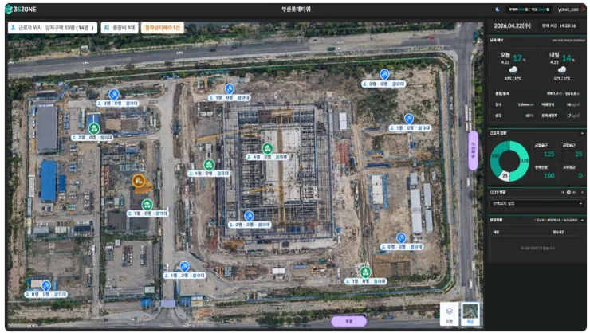
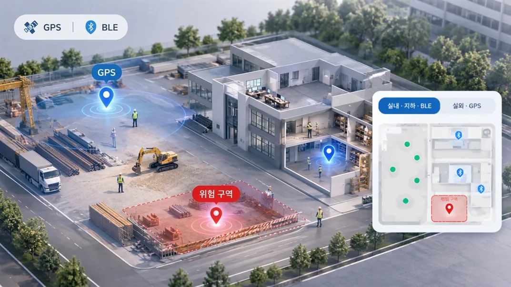
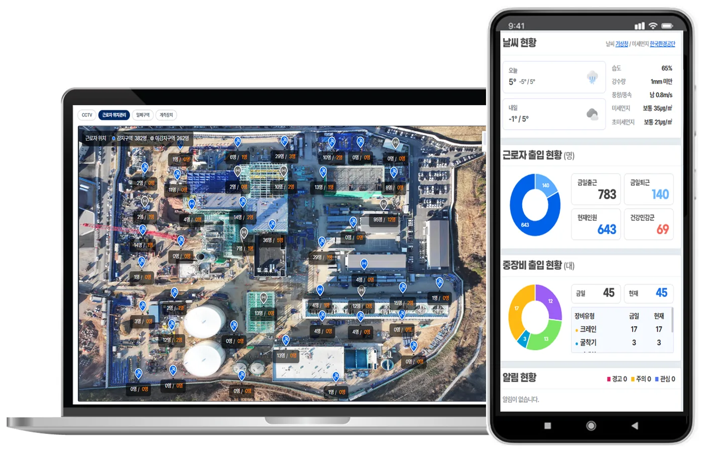

Location Control Solution
위치 관제 시스템
사람, 차량, 장비의 위치를
실시간으로 파악하는 위치 관제
근로자, 차량, 장비의 실시간 위치 데이터를 수집·분석하여 지도 화면에 시각화합니다.
각 현장 환경에 최적화된 위치관제 시스템을 구축하고,
위치기반서비스사업자 신고를 완료하여 서비스를 제공합니다.

도입 효과
- 01
위험 구역에 접근한 근로자를 즉시 확인하고 경고
- 02
비상 상황에서 인원 위치를 신속히 파악해 대피와 구조에 활용
- 03
중장비 태그와 연계해 중장비와 근로자의 충돌 · 협착 사고 예방
- 04
위치 이력으로 구역별 투입 인원과 장비 가동 현황 확인
- 05
개인위치정보는 법령에 따라 보호하며 근무 시간 · 현장 내에서만 활용

